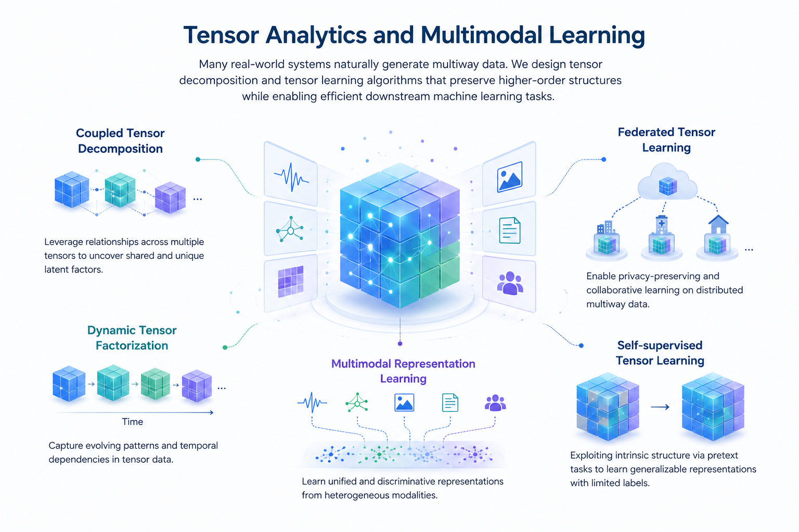

Tensor Analytics and Multimodal Learning
Many real-world systems naturally generate heterogeneous multiway data. We design tensor decomposition and tensor learning algorithms that preserve higher-order structures while enabling efficient downstream machine learning tasks.
- Coupled tensor decomposition
- Federated tensor learning
- Dynamic tensor factorization
- Multimodal representation learning
- Self-supervised tensor learning
